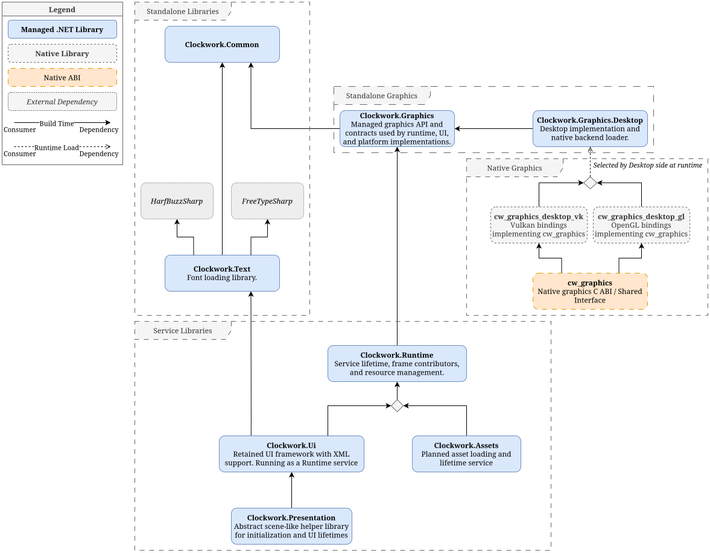

Project write-up
Clockwork
A modular C# engine/runtime framework with native graphics backend support, built around explicit package boundaries, reusable runtime infrastructure, rendering abstraction, retained UI, tooling, tests, and documentation.
Overview
Clockwork is a custom modular engine/runtime framework written primarily in C#, with a native graphics backend layer. It is actively developed and architecture-heavy: the focus is reusable infrastructure for engine-like applications, not a finished commercial engine.
The project is structured around explicit package ownership. Each major system has a focused responsibility, and optional systems plug into the runtime through services, bootstrap contributors, and frame contributors instead of being hardcoded into one monolithic core.
Architecture
The main value of Clockwork is the way the system is split. The project is not just "a game engine"; it is a framework for building engine-like software where the boundaries are part of the design.
Commonprovides shared low-level primitives and reusable base types.Graphicsdefines managed rendering concepts and renderer-facing APIs.Nativecontains low-level C/native backend code for desktop rendering support.Runtimeowns lifecycle, runtime options, services, bootstrap, frame execution, and resource/service lifetime.Registrationprovides optional registry and registrar infrastructure.UIcontainsClockwork.TextandClockwork.UIfor text/font support and retained custom UI.Presentationowns screen management, loading operations, progress reporting, and presentation-level UI flow.Sandboxcontains runnable validation apps.Testsverify package behavior.Toolssupports build-time asset and data generation.Docscontains project documentation and generated API docs.
Runtime composition
Clockwork uses a service-based runtime model where optional systems can contribute to startup and frame execution without being baked into the core runtime.
Clockwork.Runtime creates the main runtime object around a host platform. RuntimeOptions accepts services, and those services can participate in setup, lifetime, bootstrap graph execution, and frame graph execution.
That design keeps the runtime focused on orchestration. Registration, UI, presentation, resources, or other systems can be added compositionally instead of being forced into the core.
Graphics and native interop
Clockwork separates managed runtime architecture from low-level native rendering backends. C# owns the high-level systems and graphics abstractions, while native code handles backend-specific desktop graphics work.
Clockwork.Graphics provides managed renderer-facing concepts. Clockwork.Graphics.Desktop connects those concepts to desktop integration. The Native layer contains the lower-level backend implementation.
This split is important because it lets higher-level systems depend on stable managed abstractions without pretending the platform/backend details do not exist.
UI and presentation
The project includes a retained custom UI layer with layout, visuals, brushes, bindings, XML loading, text support, rendering support, and runtime UI service integration.
Clockwork.Presentation adds screen and loading-flow infrastructure on top of the runtime and UI systems. It includes screen management, loading operations, loading context/options/progress, loading screens, and presentation-level flow.
Testing and validation
Sandbox projects and tests are used to validate the architecture as the framework grows. The sandbox apps prove that packages can work together in executable scenarios, while tests cover behavior across areas such as Common, Graphics, Runtime services/resources, UI, Text, Registration, and Presentation.
Technical focus
- Designing a modular C# engine/runtime framework split into focused packages with explicit ownership boundaries.
- Building a service-based runtime model where optional systems contribute to startup and frame execution.
- Creating managed graphics abstractions backed by a separate native desktop graphics layer.
- Implementing retained custom UI with layout, visuals, bindings, XML loading, and text support.
- Adding presentation infrastructure for screens, loading operations, progress reporting, and loading UI.
- Keeping registration as a separate optional package instead of forcing registry functionality into runtime.
- Using sandbox applications, tests, docs, and tooling to keep the project understandable as it grows.
Why it matters
Clockwork is the clearest example of how I think about software: larger systems should be made of smaller pieces with ownership boundaries that actually mean something. Runtime should orchestrate, not own every feature. Optional systems should compose cleanly. Rendering abstractions should be honest about native backend work. UI should have a structure that can grow without turning every panel into one-off code.
The project is ambitious, but the framing is grounded: it is an actively developed modular engine/runtime framework centered on architecture, C#, native interop, rendering abstraction, runtime systems, retained UI, testing, tools, and documentation.
Future media
Planned additions include screenshots of UI XML loading, rendered text, sandbox apps, loading screens, debug views, and small demos showing runtime and graphics layers working together.
